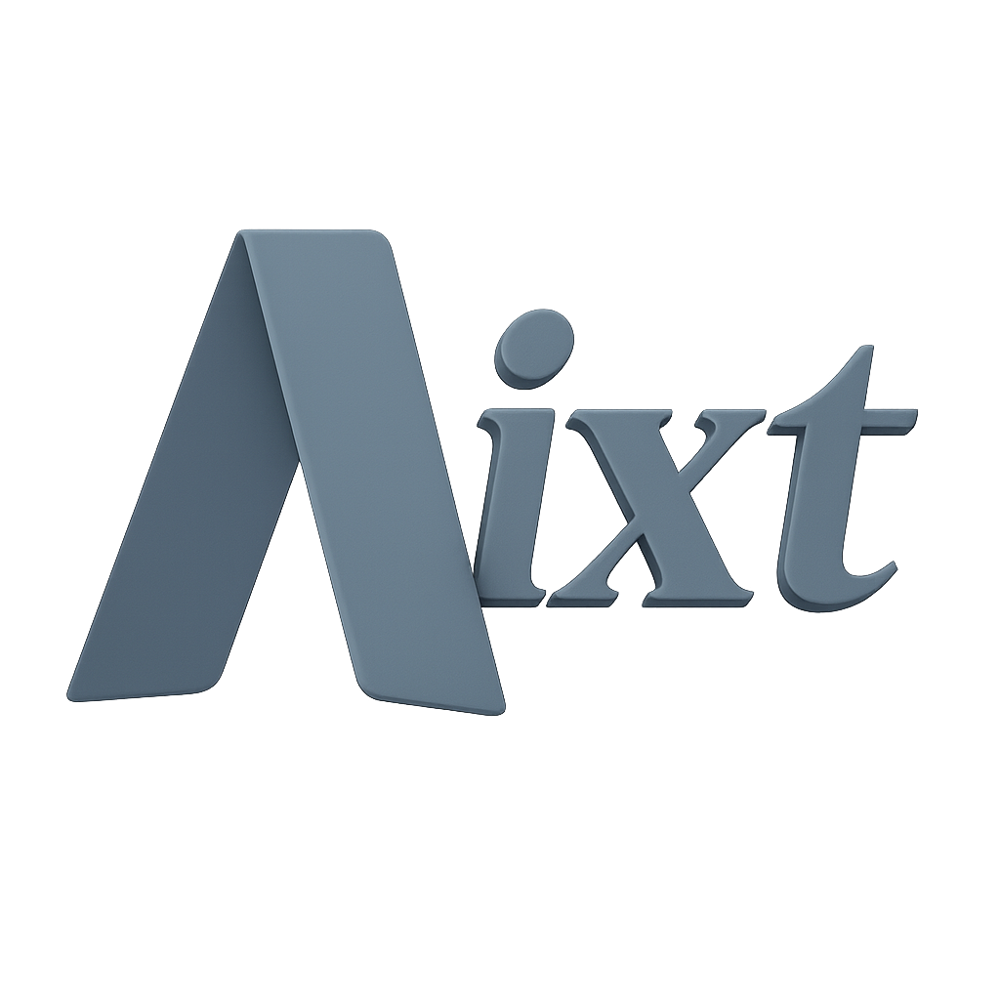

Aixt es un marco de desarrollo innovador diseñado para entornos de microcontroladores, basado en un subconjunto cuidadosamente seleccionado del lenguaje de programación V, conocido por su velocidad de compilación, simplicidad y seguridad en el manejo de memoria. Al derivar de V, Aixt adopta una sintaxis moderna y expresiva, alejándose de la complejidad de lenguajes tradicionales como C o Assembly.
Su objetivo principal es ofrecer una experiencia de desarrollo más intuitiva y eficiente para dispositivos con recursos limitados, minimizando el consumo tanto en tiempo de compilación como en tiempo de ejecución. Aixt se posiciona como un puente entre la modernidad de los lenguajes de alto nivel y las exigencias prácticas del desarrollo embebido, permitiendo crear aplicaciones sofisticadas sin renunciar al control de bajo nivel sobre el hardware.
El nombre "Aixt" tiene un significado cultural y simbólico profundo, en sintonía con los principios fundamentales del proyecto.
Proviene de una palabra en lengua Ticuna, hablada por pueblos indígenas del Amazonas, en honor a su rica herencia cultural y su vínculo con la naturaleza —valores que también se reflejan en el diseño eficiente y de bajo consumo energético de Aixt. Además, "Aixt" hace una sutil referencia al lenguaje V, cuyo símbolo es una comadreja: un animal ágil y astuto.
La semejanza fonética refuerza la intención de que Aixt represente agilidad, eficiencia e inteligencia. Así, "Aixt" es más que un nombre: es una fusión de sabiduría ancestral con una identidad tecnológica moderna, centrada en la simplicidad y la excelencia operativa.